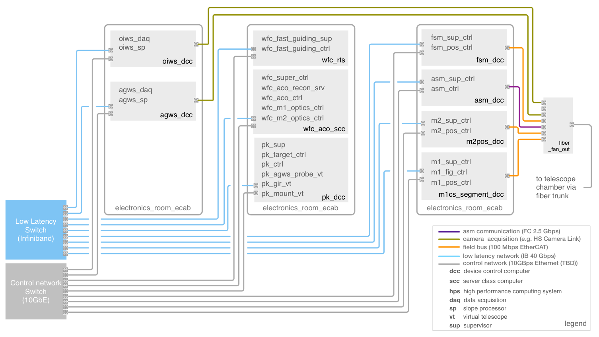

3.5.1. Natural Seeing Observing Mode¶
The simplest observing mode is natural seeing. A simplified control block diagram of the Natural Seeing (NS) WFC is shown in the Figure below. Software components associated with sensors are shown in orange, WFC components in grey, and those associated with optical compensators in blue. Arrows indicate data flow, color-coded by the type of data: Orange for WFC inputs, gray for internal data flow between WFC components, and blue for WFC outputs. The WFC includes two types of controllers: Wavefront controllers, which convert sensor measurements to residual wavefront, and optics controllers which convert those wavefronts to mechanical degrees of freedom.

Fig. 19 Natural Seeing wavefront control system simplified block diagram
The NS wavefront control functionality is split between two controllers: The NS Fast Guiding controller and the Active Optics Wavefront Controller. The Active Optics Wavefront Controller is common to all observing modes, though its reconstructor matrix changes. It provides updates to the mount pointing, M1 and M2 segment positioning, and M1 segment figure based on the wavefront slopes sent by the AGWS Slope Processor, and optionally an On-Instrument Wavefront Sensor (OIWFS, typically measuring tip-tilt or tip-tilt-focus). The NS Fast Guiding Controller converts AGWS guider signal to fast tip-tilt commands for either the FSM or ASM, and offloads the average FSM/ASM tilt to telescope pointing (not shown).
Overview
Four main control loops operate simultaneously in the natural seeing mode:
- The Slow Guiding control loop updates the pointing kernel guiding offsets based on low- pass filtered AGWS average wavefront tilt measurements.
- The Fast Guiding control loop updates the tip-tilt of the FSM (or ASM) based on full-rate AGWS segment tilt measurements.
- The Active Optics control loop updates the positions of the M1 and M2 segments, and the figure of M1, based on AGWS wavefront sensor measurements.
- The Flexure control loop updates the position of the AGWS probes based on On- Instrument Wavefront Sensor measurements.
The natural seeing mode fast and slow guiding control loops, and their expected performances, are described in detail in Section 6.12.3 [John13]. The Active Optics control loop and its performance are detailed in Section 6.12.2 [John13]. In addition to these main feedback loops, there is also an offload between the fast guiding controller and the pointing kernel to avoid saturation of the FSM or ASM tip-tilt actuators.
Component Descriptions
The Figure below shows a detailed block diagram of the natural seeing WFC, including all of the real-time software components currently envisioned. External components with interfaces to the WFC (e.g., sensor slope processors and mirror controllers) are also represented. Ports are identified with the input of output data type, and data flow with arrows. Telemetry is not explicitly shown, as it is provided as a system service to every component.
A list of natural seeing WFC components is provided in Table 10-17. A description of the most critical components is given below, followed by an identification of the connections between them. Note that wavefront aberrations have been identified using the following nomenclature:
- Global aberrations are defined over the full GMT pupil, while segment aberrations are defined over each segment.
- System aberrations represent a measurement of the full telescope optical system, while M1, ASM, etc., aberrations represent only the contribution of one optical surface.
- Temporal averages of an aberration are identified as aberration_av.
Table 5 Natural Seeing Wavefront Control System Components¶ Component Name Description Software Package wfc_fast_guide_ctrl Fast Guiding Controller wfc_ns_pkg wfc_aco_ctrl Active Optics Controller wfc_common_pkg wfc_aco_recon_srv Active Optics Reconstructor Server wfc_common_pkg m1_optics_ctrl M1 Optics Controller wfc_common_pkg m2_optics_ctrl M2 Optics Controller wfc_common_pkg At the present time, all aberrations except the M1 bending modes are defined using Zernike polynomials [Noll76].

AGWS Slope Processor
While the AGWS slope processor is not a component of the WFC, it is presented here for completeness. The AGWS slope processor converts the AGWS camera images into wavefront slopes, by computing the centroid of star or Shack-Hartmann spot images relative to reference pixel positions. The component’s input and output ports are listed in the Table below.
There are four cameras in the AGWS. Each camera may be operated in one of four modes: Idle, Guide, TT7 and SH-WFS. The number of positions in the reference list will vary from 1 in Guide mode to 7 in TT7 mode, and ~576 in SH-WFS mode. New images may be available as rapidly as 206 Hz in WFS mode, 402 Hz in TT7 mode, and up to 2 kHz in Guide mode. The operating mode of the camera will control the output port to which its wavefront slopes are provided.
Table 6 AGWS Slope Processor Ports¶ Reference positions are provided by the Active Optics Reconstructor Server and may be modified by offsets provided by other components in the control system. For example, the AGWS Supervisor component might provide open loop calibration offsets dependent on the camera probe location and gravity vector, and the telescope control system might provide guide or other offsets to affect coordinated dithers or other tracking functions.
In addition to full-rate centroid data, the AGWS slope processor will compute a low-pass filtered average wavefront tilt (from Guide, TT7, or WFS mode measurements) and provide this to the pointing kernel for slow guiding of the mount. Other parameters such as SNR, FWHM, and flux per subaperture will be computed for each camera and sent to the telemetry system. These values will be used by the Active Optics Reconstructor Server to correctly weight the measurements and verify pupil mapping.
Fast Guiding Controller
The Fast Guiding Controller computes the segment tip-tilt commands that will be sent to either the FSM or ASM controller, depending on the M2 assembly installed. Its data interfaces are listed in the following Table:
Table 7 Fast Guiding Controller Ports¶ In routine operation, the Fast Guiding Controller will close the servo control loop between the system segment tilt error measured by one AGWS probe in TT7 mode, and the absolute FSM or ASM segment tilt and piston commands. If no probe is configured in the TT7 mode, then global tilt measured by a probe in guide mode will be used. The Fast Guiding Controller must rotate the measured tilt error into the telescope coordinate system, and appropriately average measurements of multiple probes if several happen to be in TT7 or guide mode. This is done with a single matrix multiplication. Note that the low-pass filtered system global tilt error is simultaneously sent from the AGWS slope processor to the pointing kernel, and corrected at low bandwidth (~2 Hz) by the mount.
The time average of the M2 segment tilt is also computed, and offloaded to M2 Positioner via the Active Optics Controller to avoid saturation of the FSM/ASM tilt actuators.
Active Optics Wavefront Controller
The Active Optics Wavefront Controller maintains the alignment of the telescope and the figure of M1 and M2. The controller multiplies the vector of wavefront slopes measured by the three AGWS probes in WFS mode by a reconstructor matrix to compute the necessary corrections. The AGWS cameras in WFS mode will be synchronized, and will typically use 30 s integrations to average out atmospheric turbulence. The 319 error terms output by the matrix multiplication are summarized in Table 10-20. These are sent to the M1 and M2 optics controllers, as shown in Figure 10-22. The optics controllers enforce the stroke and force limits, and may therefore convert low-order bending modes into segment rigid body motion as required.
Table 8 Active Optics Reconstructor Output Terms¶ Output Terms Controlled Aberrations M1 global vertex tilt 2 Global field-dependent focus M2 global pointing-neutral tilt 2 Global coma M2 global coma-neutral tilt 2 Global field-dependent astigmatism M2 segment pointing-neutral tilt 2×6 System segment coma M2 global Z position 1 System global focus M2 segment Z position 6 System segment focus M1 bending modes 5,6,9-45 38×7 M1 segment figure M2 segment Zernike modes 5,6,9,10 4×7 M2 low-order segment figure (ASM only) GIR rotation error and differential probe position errors are determined by computing the average tip and tilt measured by each AGWS camera in WFS mode, and fitting these with a geometrical model. Any average rotation around the camera in Guide or TT7 mode is interpreted as a GIR rotation error, while the residual tip-tilt errors after the rotation is subtracted are interpreted as differential position errors of the WFS probes. GIR rotation error and differential probe position error are sent to the pointing kernel.
A complete list of the Active Optics Wavefront Controller data interfaces is given in Table Table 9. This component is common to all observing modes, but the reconstructor is different for each mode. The observing modes for which the ports are active are indicated in the last column.
Active Optics Reconstructor Server
The Active Optics Reconstructor Server generates the reconstructor matrices for fast guiding and active optics correction. Each of these depends on the observing mode, the configuration of the AGWS probes, their positions in the DG focal plane, and the angle of the GIR. The component’s data interfaces are listed in Table 10.
The reconstructor matrix for fast guiding simply average and rotate wavefront slope vectors and can be computed analytically. The active optics reconstructor matrix is more complex, and the strategy followed to date (see Section 6.12.2.5 [John13]) is to raytrace the spots of each Shack-Hartmann camera using Zemax. An unperturbed model of the telescope and AGWS wavefront sensors is first traced to provide reference spot positions. The model is then perturbed in each of the 319 degrees of freedom listed in Table 8, and the difference between the centroids and their reference positions provides a column in the system matrix. Finally, the reconstructor is computed by taking the pseudo-inverse of this system matrix.
The reconstructor is dependent on each sensor’s position and orientation in the telescope focal plane. Simulations have shown that when tracking near zenith, the matrix must be updated every ~15 seconds to avoid significant reduction in the delivered image quality due to the rapid rotation of the GIR [McLe13]. Active optics updates may have to be interrupted during a transit near zenith when the pupil rotation rate exceeds 6 deg/min.
Table 9 Active Optics Wavefront Controller Ports¶
Table 10 Active Optics Reconstructor Server Ports¶
Deployment
A representation of the deployment locations of the Natural Seeing WFC is provided in Figure the Figure below. All WFC software components run on standard rack-mounted servers in the Electronics Room of the Summit Support Building. All of these hardware components will be connected with both a low-latency Infiniband network and a standard Ethernet control network. The wavefront sensor slope processors connect to their camera systems with various fiber-based camera protocols (e.g., CameraLink HS), allowing them to also be located in the Electronics Room. Thus the only data connections onto the telescope are via fiber optics.
Fig. 20 Natural Seeing Wavefront Control System Deployment Schematic
{kind=link}